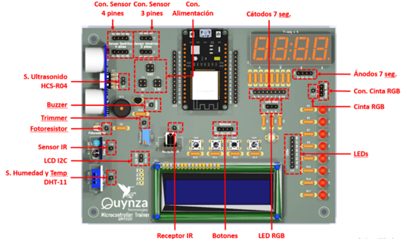

Objetivo. Mapee los conectores del entrenador QMT-020. Identifique el uso de cada conector.
Procedimiento.
Reconozca los conectores del QMT-020 siguiendo el orden:

- Conexión sensor de 4 pines. Son dos conexiones de 4 pines para sensores que trabajan con señales. Le da mucha flexibilidad al entrenador para trabajar con otros sensores que tengan 4 señales.
- Conexión sensor de 3 pines. Son dos conexiones de 3 pines para sensores que trabajan con señales. Le da mucha flexibilidad al entrenador para trabajar con otros sensores que tengan 4 señales.
- Conexiones de alimentación.
- Cátodos de 7 segmentos. Son 8 pines para conectarse a los cátodos de los displays de 7 segmentos. Los 4 pines de abajo son para seleccionar el display a encender.
- Conexión para la entrada de los 3 cables de la cinta LED.
- Señal de control para la cinta LED. Son 3 pines.
- Conexiones a los 8 LEDs. Son 8 pines para el manejo de cada uno de los 8 LEDs.
- Conexiones al LED RGB. Son 3 pines para controlar los tres colores, rojo, verde y azul.
- Conexiones para el manejo de los botones. Uno para cada botón.
- Receptor de Infrarrojo, de proximidad. 1 pin para la entrada de la señal.
- Sensor de humedad y temperatura. 1 pin, para la salida de la señal.
- Señal I2C para la salida por pantalla. 2 pines.
- Fotorresistencia. 1 pin de salida.
- Reóstato o trimmer. 1 pin de entrada.
- Zumbador. 1 pin de salida.
- Sensor de ultrasonido. 2 pines de salida.